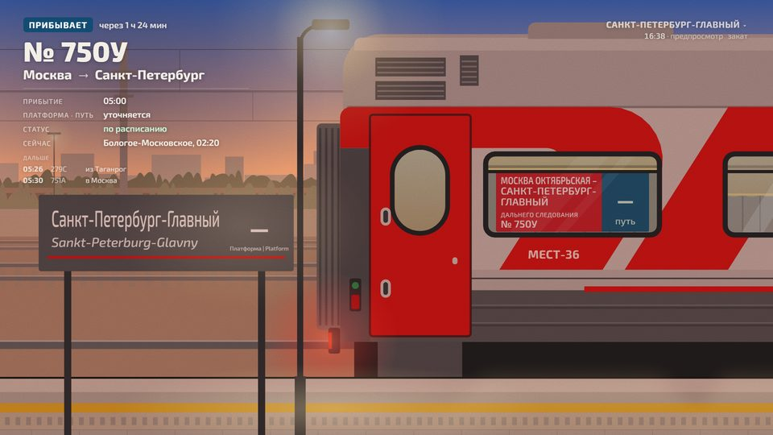
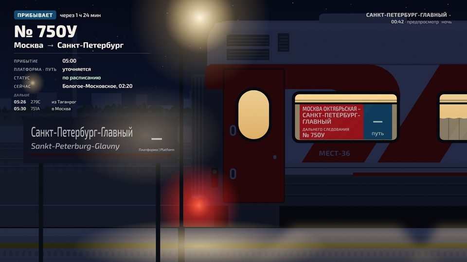
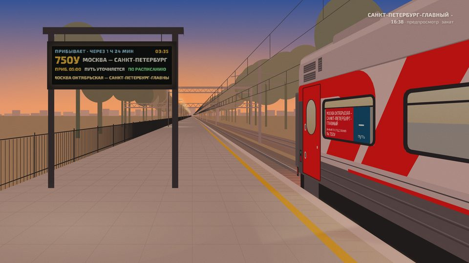
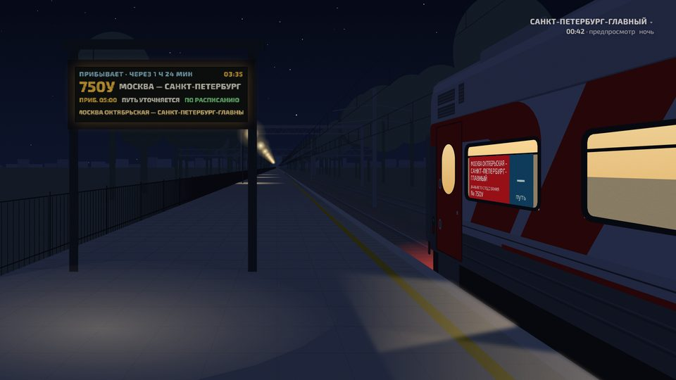

Вид 1
Вагон
Плоская иллюстрация: смотрим на хвост поезда сбоку. Маршрут и номер — на табличке в окне служебного купе, рядом — табличка станции.


Вид 2
Платформа
Перспектива: стоим на платформе, справа конец поезда, путь уходит к горизонту, над платформой — светодиодное табло.
СтанцияВыбирается в правом верхнем углу обоев: популярные вокзалы и поиск по всем станциям РЖД.
Время сутокСчитается по положению солнца над выбранной станцией. В той же панели — предпросмотр рассвета, дня, заката и ночи.
ДанныеНужен сервер:
python server/run.py. Без него обои показывают демо-расписание.